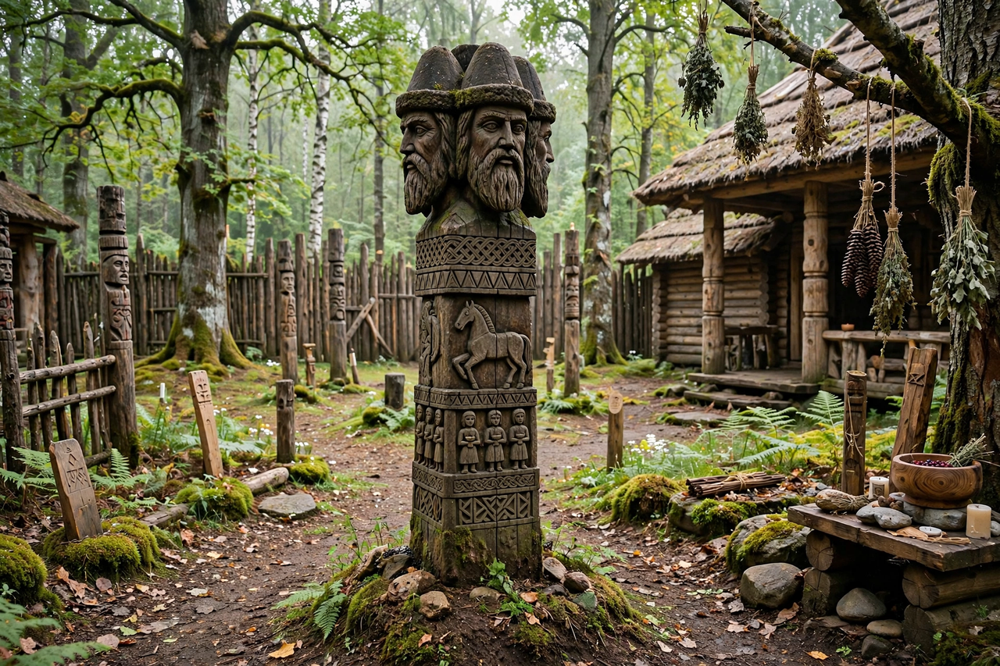

Slavic mythology

Slavic mythology or Slavic religion is the body of myths, deities and ritual practices of the Slavic peoples before their Christianisation, which proceeded between the seventh and twelfth centuries. Unlike Greek or Norse traditions, it left no native written scriptures: knowledge derives from Christian chronicles (often hostile), archaeology, place names, and folklore recorded centuries later.
Deities
The East Slavic pantheon installed by Prince Vladimir in Kiev in 980 included Perun, god of thunder and lightning, associated with oaks and weapons; Veles (Volos), god of cattle, wealth, magic and the underworld, Perun's adversary in a reconstructed myth of storm-god combat; Dazhbog, a solar god; Svarog, linked with fire and smithcraft; and Mokosh, a goddess of moisture, fate and women's work, the only female deity in Vladimir's list. West Slavs worshipped distinctive regional gods including Svetovid of Arkona, a four-faced oracular deity, Triglav, and Radegast. The authenticity of some sources — notably the Book of Veles — is widely rejected by scholars as forgery.
Cosmos and ritual
Reconstructed cosmology includes the World Tree uniting upper, middle and lower realms, sacred groves and temple enclosures (kontyna), divination, and seasonal festivals later overlaid by Christian feasts — a layering termed dvoeverie, "dual faith". Nature spirits such as the leshy (forest spirit), vodyanoy (water spirit), domovoy (house spirit) and rusalka survived vigorously in folklore, and figures such as Baba Yaga became staples of the fairy tale.
Modern revival
Since the late twentieth century, movements collectively called Rodnovery ("native faith") have sought to revive Slavic pagan practice, with organisations in Poland, Russia, Ukraine and elsewhere; their relationship to the fragmentary historical record is a subject of scholarly discussion.
See also: Mythology